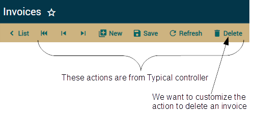
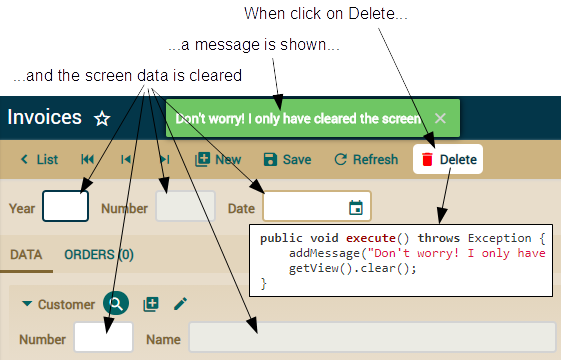
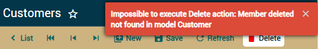
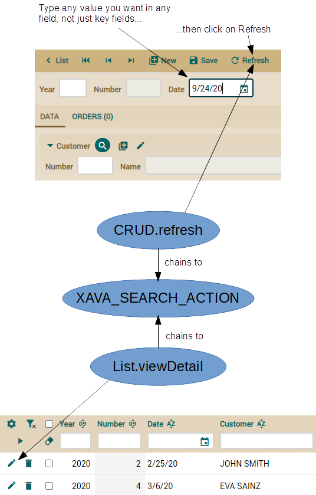
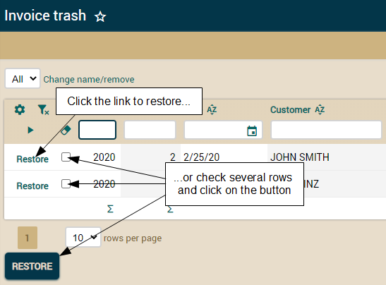
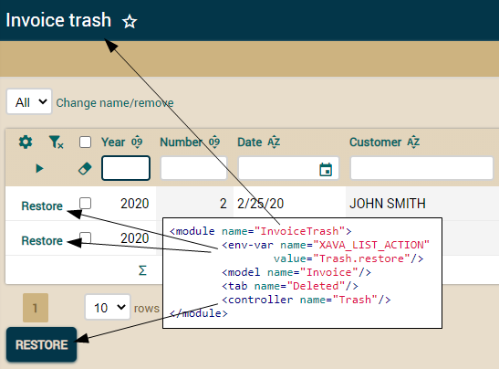

<controller name="Typical"> <!-- 'Typical' hereda sus acciones de los controladores -->
<extends controller="Navigation"/> <!-- 'Navigation', -->
<extends controller="CRUD"/> <!-- 'CRUD' -->
<extends controller="Print"/> <!-- 'Print' -->
<extends controller="ImportData"/> <!-- e 'ImportData' -->
</controller>
<controller name="CRUD">
<action name="new"
class="org.openxava.actions.NewAction"
image="new.gif"
icon="library-plus"
keystroke="Alt N"
loses-changed-data="true">
<!--
name="new": Nombre para referenciar la acción desde otras partes
class="org.openxava.actions.NewAction" : La clase con la lógica de la acción
image="images/new.gif": Imagen a mostrar para esta acción,
en caso "useIconsInsteadOfImages=false" de "xava.properties"
icon="library-plus": Icono a mostrar para esta acción, ésta es por defecto
keystroke="Alt N": Teclas que se pueden pulsar para ejecutar la acción
loses-changed-data="true": Si el usuario pulsa en esta acción sin grabar primero
los datos actuales se perderan
-->
<set property="restoreModel" value="true"/> <!-- La propiedad restoreModel de la acción
se pondrá a true antes de ejecutarla -->
</action>
<action name="save" mode="detail"
by-default="if-possible"
class="org.openxava.actions.SaveAction"
image="save.gif"
icon="content-save"
keystroke="Control S"/>
<!--
mode="detail": Esta acción se mostrará solo en modo detalle
by-default=”if-possible”: Esta acción se ejecutará cuando el usuario pulse INTRO
-->
<action name="delete" mode="detail"
confirm="true"
class="org.openxava.actions.DeleteAction"
image="delete.gif"
icon="delete"
available-on-new="false"
keystroke="Alt X"/>
<!--
confirm="true" : Pide confirmación al usuario antes de ejecutar la acción
available-on-new="false" : La acción no estará disponible mientras se crea una nueva entidad
-->
<!-- Otras acciones... -->
</controller>

<?xml version = "1.0" encoding = "ISO-8859-1"?>
<!DOCTYPE controllers SYSTEM "dtds/controllers.dtd">
<controllers>
<controller name="Invoice"> <!-- El mismo nombre de la entidad-->
<extends controller="Typical"/> <!-- Hereda todas las acciones de 'Typical' -->
<!-- Typical ya tiene una acción 'delete', al usar el mismo nombre la sobrescribimos -->
<action name="delete"
mode="detail" confirm="true"
class="com.yourcompany.invoicing.actions.DeleteInvoiceAction"
icon="delete"
available-on-new="false"
keystroke="Alt X"/>
</controller>
</controllers>
package com.yourcompany.invoicing.actions; // En el paquete 'actions'
import org.openxava.actions.*;
public class DeleteInvoiceAction
extends ViewBaseAction { // ViewBaseAction tiene getView(), addMessage(), etc
public void execute() throws Exception { // La lógica de la acción
addMessage( // Añade un mensaje para mostrar al usuario
"Don't worry! I only have cleared the screen");
getView().clear(); // getView() devuelve el objeto xava_view
// clear() borra los datos en la interfaz de usuario
}
}

@Hidden // No se mostrará por defecto en las vistas y los tabs
@Column(nullable=false) // Para llenar con falses en lugar de con nulos
@org.hibernate.annotations.ColumnDefault("false")
boolean deleted;
public void execute() throws Exception {
Invoice invoice = XPersistence.getManager().find(
Invoice.class,
getView().getValue("oid")); // Leemos el id de la vista
invoice.setDeleted(true); // Modificamos el estado de la entidad
addMessage("object_deleted", "Invoice"); // El mensaje de confirmación de borrado
getView().clear(); // Borramos la vista
}
public void execute() throws Exception {
// ...
getView().clear();
getView().setKeyEditable(true); // Crearemos una nueva entidad
}
<action name="delete"
mode="detail" confirm="true"
class="com.yourcompany.invoicing.actions.InvoicingDeleteAction"
icon="delete"
available-on-new="false"
keystroke="Alt X"/>
package com.yourcompany.invoicing.actions;
import java.util.*;
import org.openxava.actions.*;
import org.openxava.model.*;
public class InvoicingDeleteAction extends ViewBaseAction {
public void execute() throws Exception {
Map<String, Object> values =
new HashMap<>(); // Los valores a modificar en la entidad
values.put("deleted", true); // Asignamos true a la propiedad 'deleted'
MapFacade.setValues( // Modifica los valores de la entidad indicada
getModelName(), // Un método de ViewBaseAction
getView().getKeyValues(), // La clave de la entidad a modificar
values); // Los valores a cambiar
resetDescriptionsCache(); // Reinicia los caches para los combos
addMessage("object_deleted", getModelName());
getView().clear();
getView().setKeyEditable(true);
getView().setEditable(false); // Dejamos la vista como no editable
}
}
<controller name="Invoicing">
<extends controller="Typical"/>
<action name="delete"
mode="detail" confirm="true"
class="com.yourcompany.invoicing.actions.InvoicingDeleteAction"
icon="delete"
available-on-new="false"
keystroke="Alt X"/>
</controller>
<?xml version = "1.0" encoding = "ISO-8859-1"?>
<!DOCTYPE application SYSTEM "dtds/application.dtd">
<application name="invoicing">
<!--
Se asume un módulo por defecto para cada entidad con el
controlador de <default-module/>
-->
<default-module>
<controller name="Invoicing"/>
</default-module>
</application>
public class Invoice extends CommercialDocument {
//@Hidden // No se mostrará por defecto en las vistas y los tabs
//@Column(nullable=false)
//@org.hibernate.annotations.ColumnDefault("false")
//boolean deleted;
// El resto del código...
}
package com.yourcompany.invoicing.model;
import jakarta.persistence.*;
import org.openxava.annotations.*;
import lombok.*;
@MappedSuperclass @Getter @Setter
public class Deletable extends Identifiable {
@Hidden
@Column(nullable=false)
@org.hibernate.annotations.ColumnDefault("false")
boolean deleted;
}
// abstract public class CommercialDocument extends Identifiable {
abstract public class CommercialDocument extends Deletable {
// El resto del código...
}
public class Order extends CommercialDocument {
// ...
@PreRemove
private void validateOnRemove() { // Ahora este método no se ejecuta
if (invoice != null) { // automáticamente ya que el borrado real no se produce
throw new jakarta.validation.ValidationException(
XavaResources.getString(
"cannot_delete_order_with_invoice"));
}
}
public void setDeleted(boolean deleted) {
if (deleted) validateOnRemove(); // Llamamos a la validación explícitamente
super.setDeleted(deleted);
}
}

public void execute() throws Exception {
if (!getView().getMetaModel() // Metadatos de la entidad actual
.containsMetaProperty("deleted")) // ¿Tiene una propiedad 'deleted'?
{
addMessage( // De momento, mostramos un mensaje si la propiedad 'deleted' no está
"Not deleted, it has no deleted property");
return;
}
// El resto del código...
}
package com.yourcompany.invoicing.actions;
import java.util.*;
import org.openxava.actions.*;
import org.openxava.model.*;
public class InvoicingDeleteAction extends ViewBaseAction {
public void execute() throws Exception {
if (!getView().getMetaModel().containsMetaProperty("deleted")) {
executeAction("CRUD.delete"); // Llamamos a la acción estándar
return; // de OpenXava para borrar
}
// Cuando "deleted" existe usamos nuestra propia lógica de borrado
Map<String, Object> values = new HashMap<>();
values.put("deleted", true);
MapFacade.setValues(getModelName(), getView().getKeyValues(), values);
resetDescriptionsCache();
addMessage("object_deleted", getModelName());
getView().clear();
getView().setKeyEditable(true);
getView().setEditable(false);
}
}

public class SearchAction extends BaseAction
implements IChainAction { // Encadena con otra acción
public void execute() throws Exception { // No hace nada
}
public String getNextAction() throws Exception { // De IChainAction
return getEnvironment() // Para acceder a las variables de entorno
.getValue("XAVA_SEARCH_ACTION");
}
}
...
<controllers>
<!-- Para definir un valor global para una variable de entorno -->
<env-var
name="XAVA_SEARCH_ACTION"
value="Invoicing.searchExcludingDeleted" />
<controller name="Invoicing">
...
<controller name="Invoicing">
...
<action name="searchExcludingDeleted"
hidden="true"
class="com.yourcompany.invoicing.actions.SearchExcludingDeletedAction"/>
<!-- hidden="true" : Así la acción no se mostrará en la barra de botones -->
</controller>
package com.yourcompany.invoicing.actions;
import java.util.*;
import org.openxava.actions.*;
import org.openxava.model.*;
public class SearchExcludingDeletedAction
extends SearchByViewKeyAction { // La acción estándar de OpenXava para buscar
private boolean isDeletable() { // Pregunta si la entidad tiene una propiedad 'deleted'
return getView().getMetaModel()
.containsMetaProperty("deleted");
}
protected Map getValuesFromView() // Coge los valores visualizados desde la vista
throws Exception // Estos valores se usan como clave al buscar
{
if (!isDeletable()) { // Si no es 'deletable' usamos la lógica estándar
return super.getValuesFromView();
}
Map<String, Object> values = super.getValuesFromView();
values.put("deleted", false); // Llenamos la propiedad 'deleted' con false
return values;
}
protected Map getMemberNames() // Los miembros a leer de la entidad
throws Exception
{
if (!isDeletable()) { // Si no es 'deletable' ejecutamos la lógica estándar
return super.getMemberNames();
}
Map<String, Object> members = super.getMemberNames();
members.put("deleted", null); // Queremos obtener la propiedad 'deleted'
return members; // aunque no esté en la vista
}
protected void setValuesToView(Map values) // Asigna los valores desde
throws Exception // la entidad a la vista
{
if (isDeletable() && // Si tiene una propiedad 'deleted' y
(Boolean) values.get("deleted")) { // vale true
throw new ObjectNotFoundException(); // lanzamos la misma excepción que
// OpenXava lanza cuando el objeto no se encuentra
}
else {
super.setValuesToView(values); // En caso contrario usamos la lógica estándar
}
}
}
<module name="Product">
<!--Para dar un valor local a la variable de entorno para este módulo -->
<env-var
name="XAVA_SEARCH_ACTION"
value="Product.searchByNumber"/>
<model name="Product"/>
<controller name="Product"/>
<controller name="Invoicing"/>
</module>
@Tab(baseCondition = "${deleted} = false")
public class Invoice extends CommercialDocument { ... }
@Tab(baseCondition = "${deleted} = false")
public class Order extends CommercialDocument { ... }
<controller name="Invoicing">
<extends controller="Typical"/>
<!-- ... -->
<action name="deleteSelected" mode="list" confirm="true"
process-selected-items="true"
icon="delete"
class="com.yourcompany.invoicing.actions.InvoicingDeleteSelectedAction"
keystroke="Alt X"/>
<action name="deleteRow" mode="NONE" confirm="true"
class="com.yourcompany.invoicing.actions.InvoicingDeleteSelectedAction"
icon="delete"
in-each-row="true"/>
</controller>
package com.yourcompany.invoicing.actions;
import org.openxava.actions.*;
import org.openxava.model.meta.*;
public class InvoicingDeleteSelectedAction
extends TabBaseAction // Para trabajar con datos tabulares (lista) por medio de getTab()
implements IChainActionWithArgv { // Encadena con otra acción, indicada con getNextAction()
private String nextAction = null; // Para almacenar la siguiente acción a ejecutar
public void execute() throws Exception {
if (!getMetaModel().containsMetaProperty("deleted")) {
nextAction="CRUD.deleteSelected"; // 'CRUD.deleteSelected' se ejecutará
// cuando esta acción finalice
return;
}
markSelectedEntitiesAsDeleted(); // La lógica para marcar las
// filas seleccionadas como objetos borrados
}
private MetaModel getMetaModel() {
return MetaModel.get(getTab().getModelName());
}
public String getNextAction() // Obligatorio por causa de IChainAction
throws Exception
{
return nextAction; // Si es nulo no se encadena con ninguna acción
}
public String getNextActionArgv() throws Exception {
return "row=" + getRow(); // Argumento a enviar a la acción encadenada
}
private void markSelectedEntitiesAsDeleted() throws Exception {
// ...
}
}
private void markSelectedEntitiesAsDeleted() throws Exception {
Map<String, Object> values = new HashMap<>(); // Valores a asignar a cada entidad para marcarla
values.put("deleted", true); // Pone 'deleted' a true
Map<String, Object>[] selectedOnes = getSelectedKeys(); // Obtenemos las filas seleccionadas
if (selectedOnes != null) {
for (int i = 0; i < selectedOnes.length; i++) { // Iteramos sobre las filas seleccionadas
Map<String, Object> key = selectedOnes[i]; // Obteniendo la clave de cada entidad
try {
MapFacade.setValues( // Modificamos cada entidad
getTab().getModelName(),
key,
values);
}
catch (jakarta.validation.ValidationException ex) { // Si se produce una ValidationException..
addError("no_delete_row", i, key);
addError("remove_error", getTab().getModelName(), ex.getMessage()); // ...mostramos el mensaje
}
catch (Exception ex) { // Si se lanza cualquier otra excepción, se añade
addError("no_delete_row", i, key); // un mensaje genérico
}
}
}
getTab().deselectAll(); // Después de borrar deseleccionamos la filas
resetDescriptionsCache(); // Y reiniciamos el caché de los combos para este usuario
}

public class InvoicingDeleteSelectedAction ... {
//...
@Getter @Setter
boolean restore; // Una nueva propiedad
private void markSelectedEntitiesAsDeleted()
throws Exception
{
Map<String, Object> values = new HashMap<String, Object>();
// values.put("deleted", true); // En lugar de un true fijo, usamos
values.put("deleted", !isRestore()); // el valor de la propiedad 'restore'
// ...
}
// ...
}
<controller name="Trash">
<action name="restore" mode="list"
class="com.yourcompany.invoicing.actions.InvoicingDeleteSelectedAction">
<set property="restore" value="true"/> <!-- Pone la propiedad restore a true -->
<!-- antes de llamar al método execute() de la acción -->
</action>
</controller>
<application name="invoicing">
<default-module>
<controller name="Invoicing"/>
</default-module>
<module name="InvoiceTrash">
<env-var name="XAVA_LIST_ACTION"
value="Trash.restore"/> <!-- La acción a mostrar en cada fila -->
<model name="Invoice"/>
<tab name="Deleted"/> <!-- Para mostrar solo las entidades borradas -->
<controller name="Trash"/> <!-- Con solo una acción: restore -->
</module>
<module name="OrderTrash">
<env-var name="XAVA_LIST_ACTION" value="Trash.restore"/>
<model name="Order"/>
<tab name="Deleted"/>
<controller name="Trash"/>
</module>
</application>

<module name="...">
...
<tab name="Deleted"/> <!-- "Deleted" es un @Tab definido en la entidad -->
...
</module>
@Tab(baseCondition = "${deleted} = false") // Tab sin nombre, es el de por defecto
@Tab(name="Deleted", baseCondition = "${deleted} = true") // Tab con nombre
public class Invoice extends CommercialDocument { ... }
@Tab(baseCondition = "${deleted} = false")
@Tab(name="Deleted", baseCondition = "${deleted} = true")
public class Order extends CommercialDocument { ... }
<action name="deleteSelected" mode="list" confirm="true"
class="com.yourcompany.invoicing.actions.UpdatePropertyAction"
keystroke="Alt X">
<set property="property" value="deleted"/>
<set property="value" value="true"/>
</action>
<action name="restore" mode="list"
class="com.yourcompany.invoicing.actions.UpdatePropertyAction">
<set property="property" value="deleted"/>
<set property="value" value="false"/>
</action>